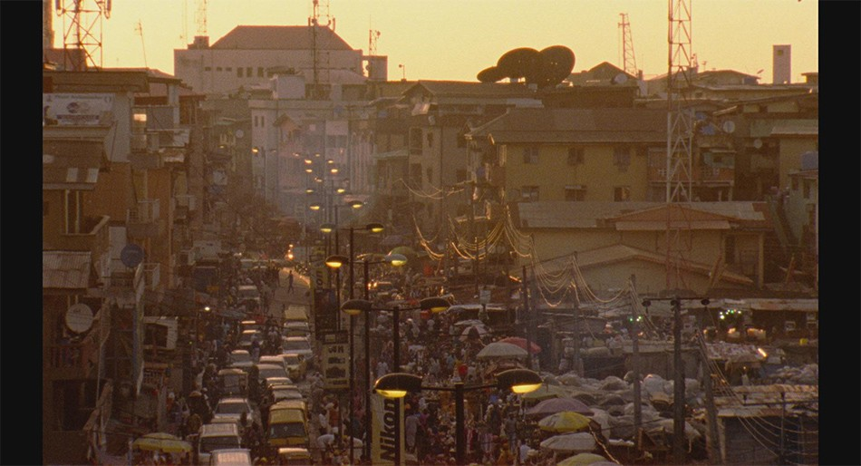
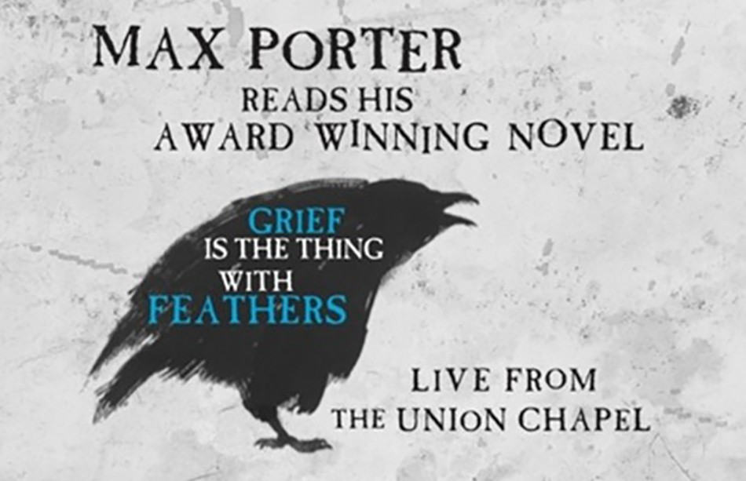

At tpr we're really lucky to work with such diverse and creative clients, especially in these challenging times. We are particularly excited about these two must-see live streamed events coming up soon – make sure to get your tickets!
EYIMOFE (This is My Desire) at the BFI's London Film Festival
Marking the 60th anniversary of Nigerian Independence next month, Eyimofe is the first offering by GDN Studios. Directed by twin brothers, Arie and Chuko Esiri, it will have its UK premiere at this year's London Film Festival on 11 October (available for 72 hours). Make sure to watch the film on BFI Player as part of the festival - see more ticket info here.
A moving and thought-provoking contribution to the New Wave of Nigerian cinema, Eyimofe is the brothers' first feature film. Funded entirely in Nigeria, and with a predominantly Nigerian cast and crew, it explores migration through a fresh lens.
Eyimofe stars the UK-based actor Jude Akuwudike (Mofe) in his first leading feature film role, alongside the Nigerian newcomer Temi Ami-Williams (Rosa) in her first screen appearance. Split into chapters and set in the present day, Eyimofe follows Mofe, a factory technician, and Rosa, a hairdresser, on their quest for what they believe will be a better life on foreign shores; but, after Mofe loses his family and Rosa fails to deliver on a promise, their plans collapse. The film juxtaposes Mofe and Rosa's perspectives to explore male and female experiences in Nigeria.
Shot in 16mm in an observational style, Eyimofe was filmed across 48 locations in Lagos, offering an intimate, kaleidoscopic portrait of the city and its residents. The BFI screening of Eyimofe comes during Black History Month, and Chuko hopes that the film will open audiences' eyes to the richness and variety of Nigerian cinema beyond Nollywood often categorised as 'Nollywood'.
Max Porter reads his novel 'Grief is the thing with feathers' Live from the Union Chapel
We have been honoured to be working with Union Chapel throughout lockdown, during this difficult time for live music venues. From Elton John to Amy Winehouse, Union Chapel in Islington is an internationally renowned music venue, promoting both popular and emerging artists; but, behind the scenes, they have always been committed to social justice work with 100% of their commercial profits going into their charitable initiatives.
On Sunday 25th October, Max Porter will read his award-winning novel Grief is the Thing with Feathers live from Islington's iconic Union Chapel live streamed into your home. This one-off event is a fundraiser for the beloved London venue and their Margins homelesness project.
Grief is the Thing with Feathers is an intoxicating bed-time story for grown-ups about the universal experience of loss. It is about childhood, parenting, poetry, pain and the infinite wisdom of crows. Dark, weird and beautiful, it is the perfect book for these times. It is an impassioned blast of literature and love, a celebration of language, and a raging heartbroken song for all of us. Join us as Max reads his own words in this very special event - you can book tickets here.